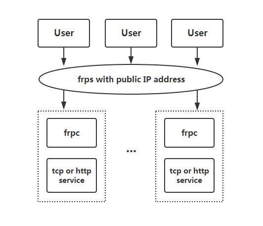
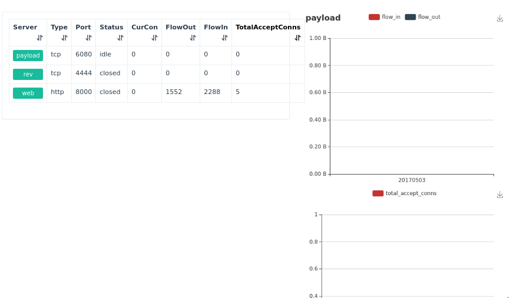

frp是中国开发者fatedier 的作品，先看介绍
frp 是一个高性能的反向代理应用，可以帮助您轻松地进行内网穿透，对外网提供服务，支持 tcp, udp, http, https 等协议类型，并且 web 服务支持根据域名进行路由转发。
之前一直在路由器上使用ngrok，所以对frp一无所知。做渗透测试，需要NAT穿透，所以一直在找好用的工具，磨刀不误砍柴工。
下载源码编译，这个编译就不是很自由，需要指定GOPATH。ubuntu下没有指定GOPATH，直接就下载到/src/xxxx了，然后也编译失败。
1 2 export GOPATH=$HOME /go$GOPATH /src/github.com/fatedier/frp
下载源码
1 2 3 go get github.com/fatedier/frp git clone https://github.com/fatedier/frp.git $GOPATH /src/github.com/fatedier/frp
编译
1 2 cd $GOPATH /src/github.com/fatedier/frpmake
安装
1 2 3 4 5 6 cp ./bin/frps /usr/bin/frps cp ./conf/frps.ini /etc/frps.ini cp ./bin/frps /usr/bin/frpc sudo cp ./conf/frpc.ini /etc/frpc.ini
默认使用配置文件
直接看帮助。
1 2 3 4 5 6 7 8 9 10 11 12 13 14 15 16 17 root@gorgiaxx:~ frps is the server of frp Usage: frps [-c config_file] [-L log_file] [--log -level=<log_level>] [--addr=<bind_addr>] frps [-c config_file] --reload frps -h | --help frps -v | --version Options: -c config_file set config file -L log_file set output log file, including console --log -level=<log_level> set log level: debug, info, warn, error --addr=<bind_addr> listen addr for client, example: 0.0.0.0:7000 --reload reload ini file and configures in common section won't be changed -h --help show this screen -v --version show version
支持读取配置文件，所以我们直接看配置文件。作者给出的配置文件示例已经写的很详细了。所以配置起来非常方便
贴出我的配置文件
1 2 3 4 5 6 7 8 9 10 11 12 13 14 15 16 17 18 19 20 21 22 23 24 25 26 27 28 29 30 31 32 33 34 35 36 37 38 39 40 41 42 43 44 45 46 47 48 49 50 51 52 53 54 55 56 57 58 59 [common] bind_addr = 45.32.42.185 bind_port = 7000 vhost_http_port = 8000 vhost_https_port = 8443 dashboard_port = 7500 dashboard_user = your_name dashboard_pwd = your_password log_file = /var/log /frps.log log_level = warn log_max_days = 3 privilege_mode = true privilege_token = your_privilege_token heartbeat_timeout = 30 privilege_allow_ports = 2000-3000,3001,3003,4000-50000 max_pool_count = 100 authentication_timeout = 60 subdomain_host = gorgiaxx.me [rev] type = tcpauth_token = gorgiaxx bind_addr = 0.0.0.0 listen_port = 4444 [web] type = httpauth_token = gorgiaxx subdomain = frp
1 2 3 4 5 6 7 8 9 10 11 12 13 14 15 ～$ frpc -h frpc is the client of frp Usage: frpc [-c config_file] [-L log_file] [--log -level=<log_level>] [--server-addr=<server_addr>] frpc -h | --help frpc -v | --version Options: -c config_file set config file -L log_file set output log file, including console --log -level=<log_level> set log level: debug, info, warn, error --server-addr=<server_addr> addr which frps is listening for , example: 0.0.0.0:7000 -h --help show this screen --version show version
配置文件
1 2 3 4 5 6 7 8 9 10 11 12 13 14 15 16 17 18 19 20 21 22 23 24 25 26 27 28 29 30 31 32 33 34 35 36 37 38 39 40 41 42 43 44 45 46 47 48 49 [common] server_addr = 45.32.42.185 server_port = 7000 log_file = /var/log /frpc.log log_level = warn log_max_days = 3 auth_token = gorgiaxx privilege_token = your_token [rev] type = tcplocal_ip = 127.0.0.1 local_port = 4444 use_encryption = false use_gzip = false [pre_rev] privilege_mode = true type = tcplocal_ip = 0.0.0.0 local_port = 5555 remote_port = 5555 [web] type = httplocal_ip = 127.0.0.1 local_port = 8080 use_gzip = true pool_count = 20 subdomain = frp
frp权限控制做的比较好，不怕端口暴露在公网。所以可以放心常驻后台
1 nohup frps -c /etc/frps.ini &
1 nohup frps -c /etc/frps.ini &
直接浏览器访问
1 http://gorgiaxx.me:7500/
输入用户名密码就能看到面板了

fatedier/frp